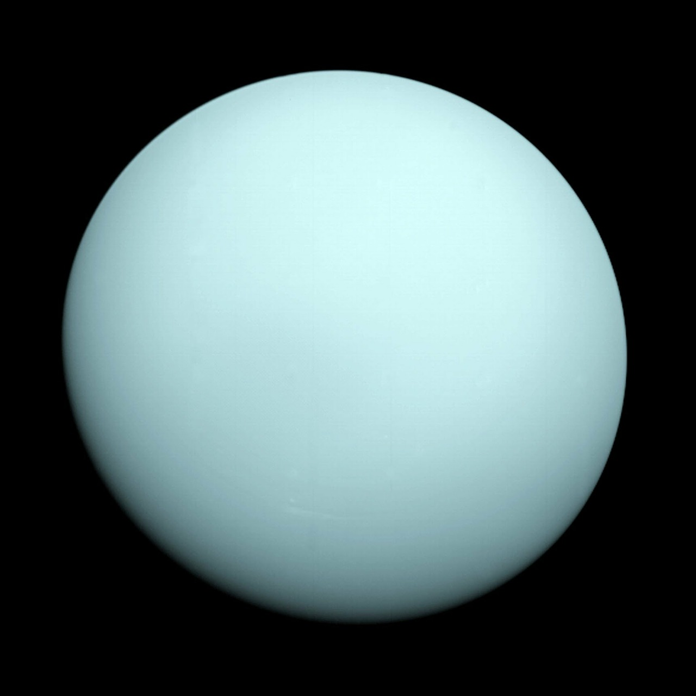

Dette er den første paragrafen på dette nettstedet.
Dette er den andre paragrafen på dette nettstedet.
Jupiter er den største planeten i vårt solsystem og er kalt opp etter kongen av alle de romerske gudene. Den blir ikke betraktet som en "jordlignende" planet, fordi dens overflate er en virvlende masse av flytende hydrogen, med en kjerne av jern som er på størrelse med Jorden.
Ved siden av hydrogen inneholder atmosfæren helium, metan og synlige skyer av iskald ammoniakk, som blåser langs overflaten av planeten. En flekk, som har en diameter dobbelt så stor som Jorden, er sannsynligvis en 21 000 kilometer bred storm som har rast i tusenvis av år. Flekkens dyprøde farge indikerer at den tårner tusener av kilometer over de lysere skyene.
Jupiter har 16 måner. De største er Europa, Ganymedes, Io og Callisto. Hver av disse månene har en overflate som skiller seg karakteristisk fra de andre. Når Jupiter er som nærmest Jorden er det mulig å se hvordan månene går i bane rundt den store planeten ved å bruke felt kikkerter.
Den mest overraskende av alle planeter er Uranus. Den syvende planeten ra solen. Uranus ligger omtrent i en 90 graders vinkel i forhold til solen. Dette betyr at en av polene konstant peker mot solen mens den roterer. Det merkelige er at temperaturen ved de to polene nesten er identisk.
Uranus er en ikke-jordlig planet. Overflaten består av et overopphetet hav av vann. En tett atmosfære, hovedsakelig bestående av hydrogen og helium, sørger for et trykk som varmer vannet til tusen av grader og samtidig forhindrer at det koker. De høye temperaturene hindrer at trykket fører til at vannet antar fast form.
Rundt Uranus er det 15 måner. Inntil Voyager 2 begynte å sende informasjon tilbake til Jorden i Januar 1986, var kun fem måner kjent - Oberon, Titania, Umbrial, Ariel og Miranda.
På samme måte som Saturn er Uranus omgitt av ringer. Dette ble oppdaget av astronomer i 1977, da de observerte en okultasjon, som er en stjerne eklipse av en planet. De så at stjernens lys blafret i 35 minutter før okultasjonen med Uranus. Etter at Uranus passerte foran stjernen reverserte lyset blafringen før den ble fullt synlig igjen.
| Oslo | Bergen | Trondheim | Tromsø | |
|---|---|---|---|---|
| Total | 12 mm | 34 mm | 14 mm | 23 mm |
| Juni | 3 mm | 10 mm | 5 mm | 4 mm |
| Juli | 5 mm | 12 mm | 7 mm | 6 mm |
| August | 4 mm | 12 mm | 2 mm | 13 mm |